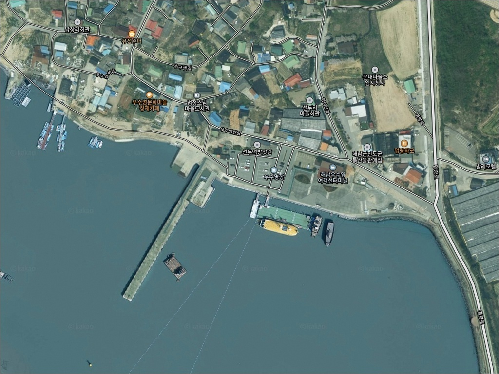
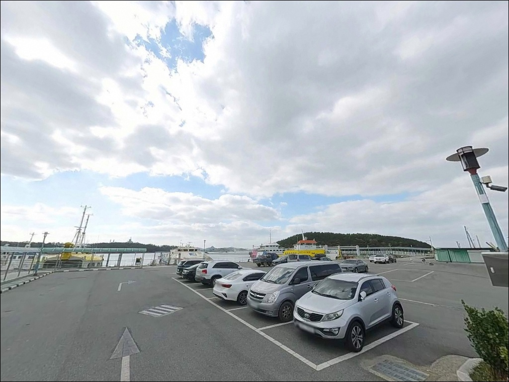
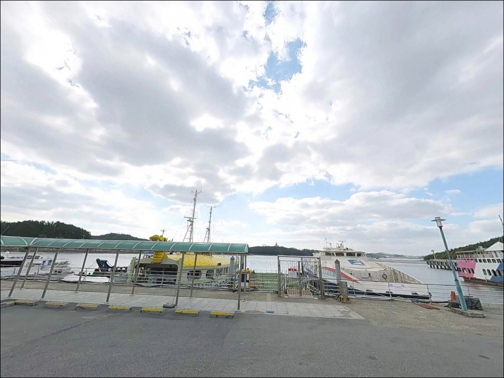
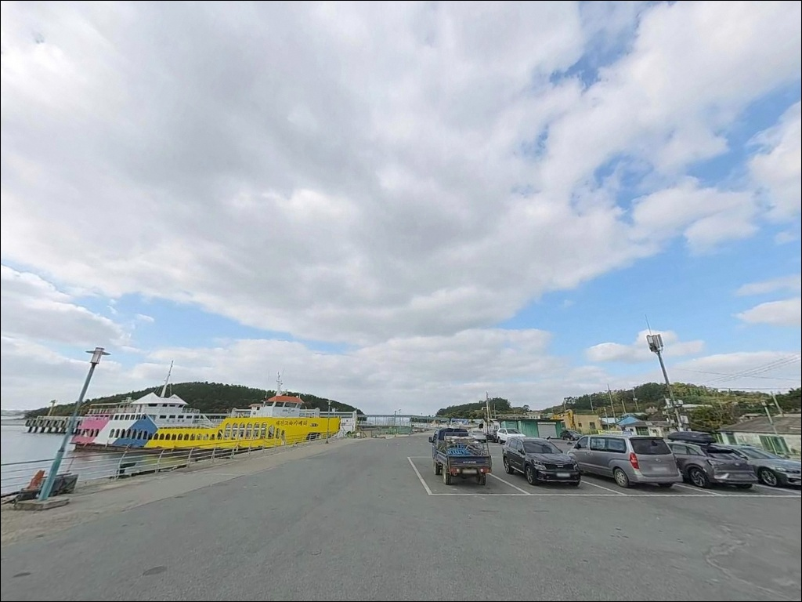
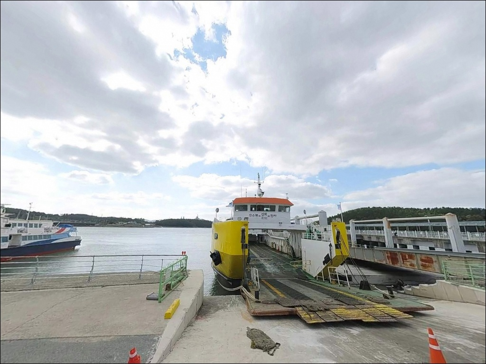
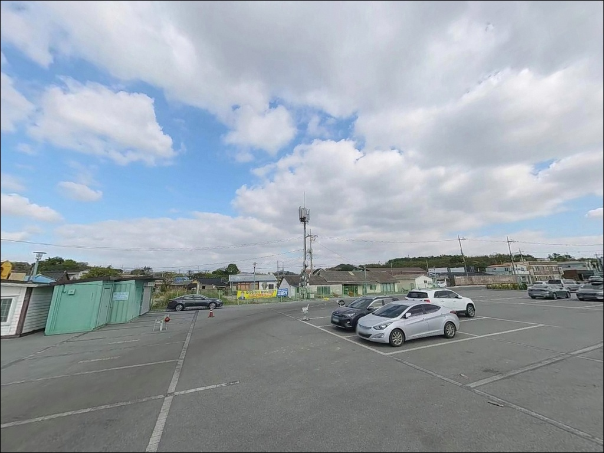
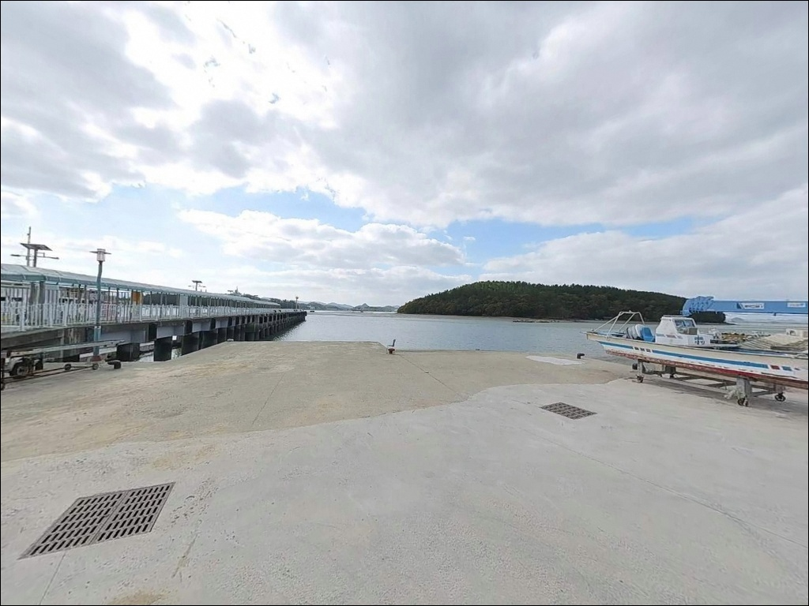
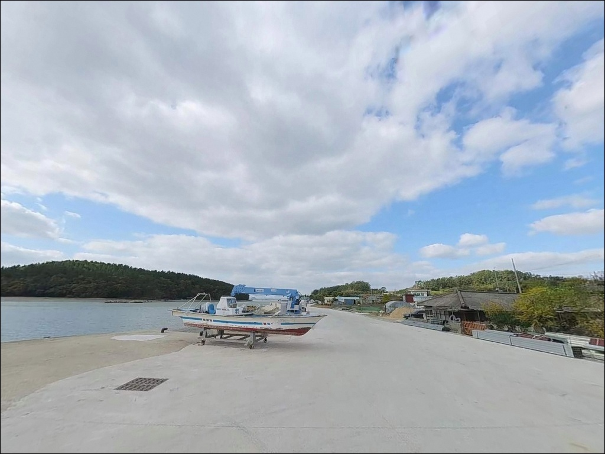
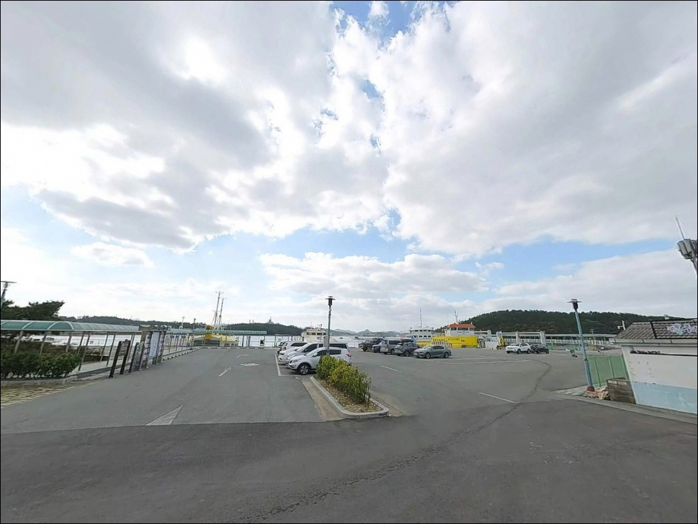

우수영항, 전남 해남군 잔잔한 물결과 어울리는 차박, 낚시 한적한 포인트
이 페이지에는 광고(제휴 링크 포함)가 있으며, 광고 링크를 통해 구매하면 운영자가 판매 수익 또는 수수료를 받을 수 있습니다. 포인트 사진: 카카오맵 스카이뷰·로드뷰. 이 페이지의 지도·사진 이미지는 카카오맵의 실제 서비스 이미지와 다를 수 있습니다.


포인트 안내
우수영항
전남 해남군 문내면 선두리 421-12
물때 계산 없이 우수영항 방파제에 들어서면,
울돌목 조류가 어떤 채비도 쓸어버려
낚시 자체가 불가능한 상황이 됩니다.
명량해협의 유속은 사리 전후 최대 13노트,
시속으로 환산하면 24km에 달해
일반 봉돌로는 바닥을 잡는 것조차 어렵습니다.
전남 해남군 문내면 선두리,
울돌목 북쪽 해남 측에 자리한 우수영항은
2008년 전라남도 고시로 개발계획이 수립된
지방어항입니다.
바로 옆 명량해협은 서해와 남해를 잇는
폭 293m의 협수로로,
이순신 장군의 명량대첩이 이 물길을 무대로 펼쳐진
역사적 장소이기도 합니다.
이 글은 우수영항의 조류 특성과 물때 판단 기준,
지형 기반 낚시 여건, 차박 체류 조건에 집중합니다.
조황 단정이나 특정 어종 보장은
이 글의 범위에 포함되지 않습니다.

1. 진입 동선과 포인트 접근 여건
우수영항까지는 2차선 포장도로가 연결되어 있어
차량 진입 자체에 어려움은 없는 편입니다.
서해안 방향에서 진입 시
우수영관광지 방면 도로가 기본 경로이며,
관광지 주차장 방향에서 항 쪽으로 분기되는
구조입니다.
항 내부는 소규모 지방어항 특성상
선착장 주변 여유 공간이 넓지 않은 편입니다.
대형 캠핑카나 트레일러를 견인한 차량이라면
진입 전 위성지도로 회차 공간을 먼저 확인하는
것이 순서입니다.
주차 후보지로는
우수영관광지 공영주차장과
방파제 배후 아스팔트 공터가 활용됩니다.
여객터미널 인접 구간에도
넓은 무료 주차 공간이 갖춰져 있어
대부분의 방문자는 이 구간을 기점으로 삼습니다.

2. 차박 환경과 야간 체류 여건
우수영관광지 인근이라는 특성상
항 주변에는 관광 인프라가 집중되어 있습니다.
우수영국민관광지는 1986년 국민관광지로 지정된
명소로, 야간에도 주변 조명이 어느 정도
밝은 환경입니다.
다만 주말·성수기에는 관광객 통행이 많아
프라이버시는 제한적입니다.
낚시 후 하룻밤 조용히 머무는 용도라면
평일 방문이 훨씬 유리합니다.
울돌목 물살 소리가 야간에도 들리는 환경으로,
바람 방향에 따라 외항 쪽은
파도 영향을 직접 받는 구간이 있습니다.
취침 위치는 내항 방향 쪽이 더 안정적입니다.
여객터미널 구간은 추자도·제주도행 페리가
운항하는 항만 시설 구역입니다.
야간 체류 시 선박 운항 시간대 소음과
작업 조명을 감안해
주차 위치를 사전에 판단해 두는 것이
좋습니다.


3. 주변 편의시설 및 인프라 현황
우수영관광지 일대에는
명량대첩기념공원(061-530-5541)과
명량해상케이블카(061-535-9900)가
항에서 도보 이동 가능한 거리에 위치합니다.
관광지 구역 내 화장실은
공원 운영 시간 기준으로 이용 가능하며,
여객터미널 내 편의시설도
운항 시간대 활용할 수 있습니다.
식품·낚시 소품 등 출조 전 물자는
방문 전 사전에 완비하는 것이 기본입니다.
응급 상황 발생 시
해남읍까지는 약 20km 거리이므로
비상약품과 수분은 충분히
준비해 가는 편이 안전합니다.

4. 진입 전 반드시 챙겨야 할 준비사항
우수영항 방문에서 가장 먼저 할 일은
물때 확인입니다.
바다타임에서 문내면 기준 완류 시각과
사리·조금 주기를 확인한 뒤
출발 시각을 맞추는 것이
이 포인트 공략의 출발점입니다.
사리 전후 진입은 원칙적으로 피하는 것이
기본 판단 기준입니다.
여객선 운항 시간대는
선착장 구역 접근에 영향을 줍니다.
우수영항 여객터미널(061-535-8882) 운항 일정을
출발 전 확인해 두면
낚시 자리 선택 범위를 사전에 좁힐 수 있습니다.
울돌목 갯바위 구간은
물때 변환 시 수위가 급격히 변합니다.
퇴로를 먼저 확인하고 자리를 잡아야 하며,
구명조끼 착용은 선택이 아닌 필수입니다.
채비 손실이 잦은 지형이므로
여분 채비와 봉돌을 넉넉히 챙겨야 합니다.

5. 울돌목 조류가 낚시 포인트 선택 자체를 바꾸는 이유
우수영항 낚시에서 조류는
단순 참고 사항이 아닙니다.
낚시 가능 여부 자체를 결정하는 변수입니다.
명량해협의 통상 유속은 7~10노트 수준이며,
이 구간에서는 어떤 채비를 써도
조류를 버티기 어려운 상황이 만들어집니다.
이 포인트를 찾기 전 최신 조황을
반드시 검색해 보시기 바랍니다.
방파제 끝단과 갯바위 경계선은
물때에 따라 조과 차이가 극명하게 갈리는 구간이므로,
입장 전 조류 방향과 세기를 먼저 확인하는 것이 순서입니다.
항 내측은 어선 정박 공간 성격이 강한 구역으로
낚시 가능 구간은 방파제 외측과
선착장 끝단을 중심으로 형성됩니다.
조류가 완화되는 지형 꺾임 지점과
갯바위 가장자리가 실질 포인트입니다.
진도대교 교각 아래 갯바위 구간에서는
전통적인 숭어 뜰채잡이가 이어져 온 포인트입니다.
숭어는 거센 물살을 피해 갯바위 가까이로 붙어 이동하는 습성이 있어,
조류가 강한 시간대에도
갯바위 경계선에는 어종이 머무는 경향이 있습니다.
이 원리는 루어와 찌낚시 자리 선택에도
그대로 적용됩니다.


6. 포인트에 어울리는 낚시 스타일
우수영항에서 가장 현실적인 낚시 방식은
원투낚시입니다.
완류 전후 조류가 잠시 완화되는 타이밍에
방파제 끝단이나 선착장에서
저면을 노리는 방식이 이 지형에 맞습니다.
빠른 조류를 버텨야 하므로
일반보다 무거운 봉돌을 준비해 가는 것이
기본 세팅입니다.
루어낚시도 이 포인트에서 시도해볼 만한 스타일입니다.
조류 경계면이 형성되는 구간은
농어가 먹이를 사냥하기 좋은 환경이 되는 편입니다.
완류 직전·직후
미노우 계열로 조류 경계선을 탐색하는
방식이 이 지형 구조에 어울립니다.
우수영항은 에깅으로도 접근해볼 수 있는 구조입니다.
방파제와 선착장 끝단의 수심 변화 구간이
갑오징어가 붙기 좋은 조건을 갖추고 있으며,
조류가 살아 있는 구간에서
벽면이나 수중 턱을 공략하는 방식이 가능합니다.
숭어는 4월 중순부터 초여름 6월까지
갯바위 인근에서 루어와 찌낚시로
노려볼 수 있는 어종입니다.
우수영항은 완류 전후 짧은 시간대를 노려야
채비 컨트롤이 가능한,
조류 특성이 낚시 성패를 결정하는 포인트입니다.

7. 대안 포인트와 플랜 B 동선
우수영항 조류가 너무 강하거나
자리 여건이 여의치 않을 때는
진도대교를 건너 진도 녹진항 방파제가
첫 번째 대안입니다.
울돌목 남쪽 진도 측에 위치해
비슷한 조류 패턴을 공유하면서도
방파제 구조가 더 안정적인 편입니다.
해남 화원면 방향으로 이동하면
별암항 방파제가 있습니다.
우수영항 조류 영향에서 벗어난 지형 구조로
일반 방파제 낚시 패턴을 적용하기에
더 무난한 조건을 갖추고 있습니다.
에깅이나 원투 방식으로
부담 없이 시도해볼 수 있는 대안입니다.
바다타임 낚시 포인트 DB에
우수영항 인근 포인트로 등록된
진도농공단지 동측 방파제도 함께 살펴볼 만합니다.
울돌목 본류 직접 영향권에서 벗어난 구조로,
조류가 완화된 환경에서
루어·원투를 병행하기에 적합한
이동 동선상 효율적인 포인트입니다.

조류를 이해하면
우수영항이 달라 보입니다
원투낚시나 루어낚시에 익숙하고
물때 판단에 어느 정도 경험이 있는 낚시인이라면
우수영항의 지형 조건은 충분히 도전할 만합니다.
울돌목이 만드는 조류 경계면과
갯바위 경계선은
일반 방파제에서는 경험하기 어려운
독특한 포인트 구조를 갖추고 있습니다.
반면 물때 계산 없이 사리 전후에 도착하거나,
갯바위 진입 후 퇴로를 확보하지 않은 상태로
자리를 잡는다면
위험한 상황이 만들어질 수 있습니다.
물때 확인, 완류 타이밍 계산,
구명조끼 착용,
이 세 가지를 갖추고 가는 것이
이 포인트 방문의 기본 조건입니다.
명량대첩기념공원과 인접한 관광 인프라 덕분에
차박과 낚시를 함께 계획하기 좋은 위치입니다.
평일 조용한 날, 완류 타이밍에 맞춰 자리를 잡고
울돌목 물살 소리를 들으며 하룻밤 머문다면
기억에 남는 출조가 될 수 있는 곳입니다.